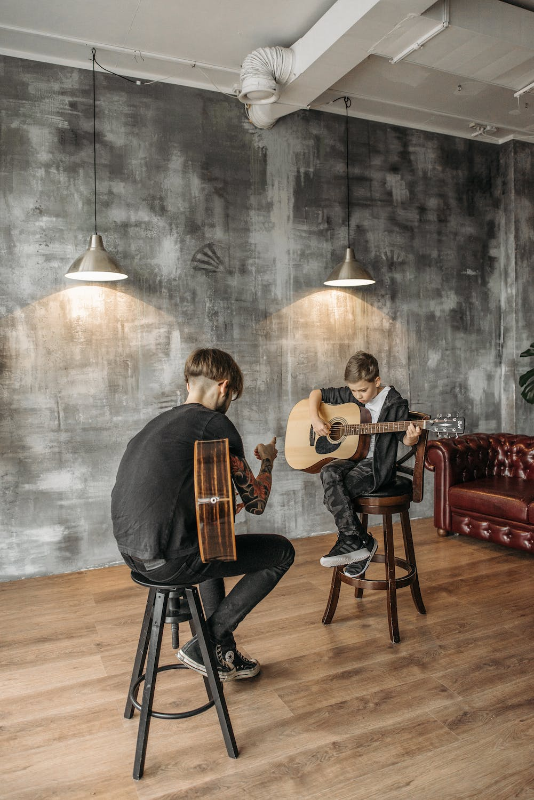
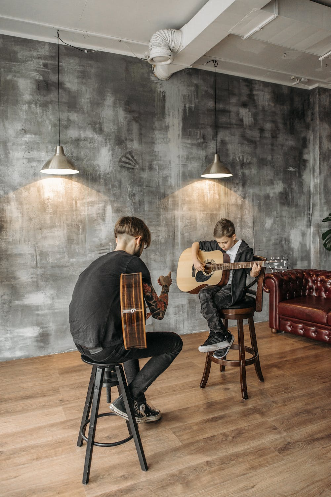
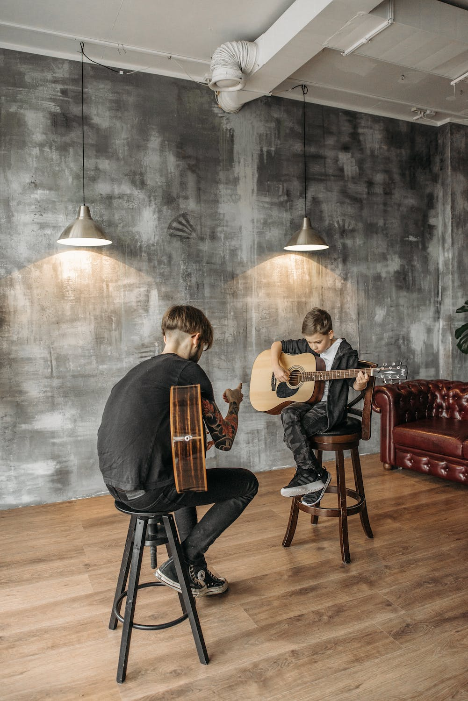

¡Descubre la música en Toquen el DOM! Sumérgete en un espacio donde la pasión y el aprendizaje se encuentran.
Explora cursos únicos impartidos por profesionales y encuentra tu ritmo con nosotros.
 

Toquen el DOM
¡Descubre la música en Toquen el DOM! Sumérgete en un espacio donde la pasión y el aprendizaje se encuentran.
Explora cursos únicos impartidos por profesionales y encuentra tu ritmo con nosotros.
